Tropical Rainforest
by Parker
V
3 Locations of Tropical Rainforest:
Amazon Basin in South America
Congo Basin in Africa
Southeast Asia
V
Weather & Climate:
Temperature: 68-93 degrees fahrenheit
Weather: Warm, humid, a lot of rain
Precipitation: 69-157 inches every year
V
3 Plants & Adaptations:
Kapok Tree
: Tall, broad leaves for sunlight, buttress roots for stability
Bromeliads
: Leaves form water tanks, adapted to grow on trees
Orchids
: Aerial roots absorb moisture, grow on branches
(Images are representative, not actual plant photos)
V
3 Animals & Adaptations:
Jaguar
: Camouflage fur, strong jaws for hunting
Poison Dart Frog
: Bright colors warn predators, toxins for defense
Sloth
: Slow movement avoids predators, algae grows on fur for camouflage
(Images are representative, not actual animal photos)
V
Sample Food Chain:
Leaf → Grasshopper → Frog → Snake → Jaguar
V
Sample Food Web:
Producers: Leaves, fruits
Primary consumers: Grasshopper, monkey, sloth
Secondary consumers: Frog, bird, bat
Tertiary consumers: Snake, jaguar

V
3 Biotic Factors:
Trees (Kapok, Mahogany)
Animals (Jaguar, Sloth)
Fungi (Mushrooms, Decomposers)
V
3 Abiotic Factors:
Rainfall
Temperature
Soil type
V
3 Ecological Issues:
Deforestation
Species going extinct
Climate change
V
3 Activities in the Rainforest:
Wildlife watching
Canopy tours/ziplining
River boat tours
V
References:
rainforests.mongabay.com
National Geographic